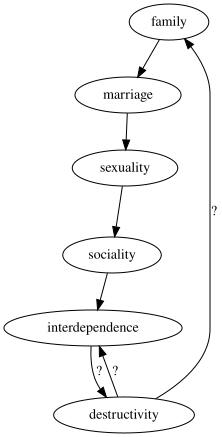

2022-06-02
One of the greatest forms of social capital and source of human meaning lies with the construct known as the family. This element of social order is severely eroded, having been reduced in the common understanding to refer only to nuclear family, and faces further deconstruction beyond that.
Here I’m laying out my model that seeks to capture some explanation for familial breakdown in the large. I’m saying that it has deep roots, with supporting entities broken down on the way, and in turn their support all breaks based on general non-concern. I claim that family and marriage are interrelated, and that marital breakdown can lead to family breakdown. That this is equally so in the conceptual realm. If sexuality breaks down then so too can marriage. Social breakdown damages the concept of sexuality. And a drive for independence often leads to social breakdown. I describe what it means for each concept to be broken down, and I link these in theory, based on my experience in the world. If these entities can be seen to be supporting their respective concepts, and that they are all in fact broken, and that it is observed that non-concern for each breaks their higher supported entity, then there may be something of value to this model. And experience does seem to validate precisely that. Continuing:
Marriage in legal and social forms provide support for the structure of a family over the lifetime of it’s constituent members. Any change in the structure supporting family changes the family itself. As such, a significant wedge in the crevice for family is likely found in a lack of general social concern for marriage, shown in it’s general decline in both numbers and quality.
Unique among contracts is the sexual aspect to marriage. While the actuality of sexuality may vary, the tokens and rituals that are informed by it end up defining much of what makes a marriage. The telos of marriage necessitates sexuality; to claim sexuality as irrelevant to marriage is to extend such a claim to it’s associations, and fundamentally strike at the core of marriage. Ignorance of sexuality in marriage is equally a breakdown in any understanding of marriage.
Indeed there remains a non-concern over sexuality and it’s concomitant ethics. Rather than being held in tension to virtues such as duty and chastity, sexuality is an action and a state of being (“bodies and pleasure”), simultaneously everywhere and nowhere. Intercourse is just another act, but a special case that holds broad public taboo. Public reference to sexuality is strictly indirect. In recent decades, the gay pride movement has provided some of the most powerful arguments in support of the institution of marriage - yet this very movement distances itself publicly from explicit sexuality, with proponents placing most of their emphasis on love, which is ironically something which has not had anywhere near as much social censure as actual sexuality. Perhaps this is an exploitation of “love” being such an overloaded term in English compared with, e.g. Ancient Greek in ἀγάπη, ἔρως, φιλία, στοργή, etc.. Privately, sexuality in general pervades far more than is publicly referenced, between daily rituals of “swiping right” and the “private tab”.
Sexuality influences and is influenced by social relations generally. Any change in one necessitates a change in the other. Sexuality is the foremost of any relation, at a fundamental psychological level providing impetus to human action despite it’s typical burial under some alternative, bowlderised, rationalisation for action. Attachment likewise is a well-understood physiological process as a side effect for those who aren’t numbed to it. It is the most raw form of sociality, rendering one utterly bare. Foucault[1] and Scruton[2] shared at the very least a conviction in the importance of sexuality, placing it one step above the shrug of the shoulders that the mass mind has been conditioned to express – this expression likely being a subverted puritan relic. Scruton did a better job of relating the importance of it to formal recognition, in marriage, though they both agreed on the formation of social relations possessing close ties to sexual relations.
The lack of concern for sexuality is grounded in a denial of it’s formation of social relations, which ultimately stems from a lack of concern for social relations in general. Social relations of friendship in particular sees friends as just another form of entertainment, possibly becoming outmoded by newer forms of pleasure.
When forced to depend on another, bonds are always created. Certain situations in modern times forge these bonds, with military comraderie being a notable example. In “village times”, survival of the more mundane form also required close co-operation, thereby fostering exceptionally tight communal bonds. Dependence is sufficient, but not necessary, for sociality. Independence therefore has a chance at undoing sociality, in the case where dependence is all that holds a community together.
As such, a lack of concern for sociality may be due to a lack of interdependence between people in situ, where no “bonds” exist to hold them together as a physical community. Of course, another irony is that people are more dependent than ever, just not on anyone that they know personally.
My breaking-off point is to question where such local independence stems from. Was it truly a general social desire for independence? If so, in what did this desire originate? Did it “just happen”, as a degenerate Nash equilibrium of impersonal economic forces?
As used above, “bond” may suggest some answer, with all of the varied denotations including a literal strip that fastens, a legal covenant, a certificate of debt, or since the late 1960’s a more abstract connection between people. Most of these meanings have strongly negative associations, though their ends may be seen as positive. The formation of attitudes around social bonds reflects this, with Etymonline producing an interesting description:
In the more despotic Norway and Denmark, bo’ndi became a word of contempt, denoting the common low people. … In the Icelandic Commonwealth the word has a good sense, and is often used of the foremost men ….” [OED]. The sense of the noun deteriorated in English after the Conquest and the rise of the feudal system, from “free farmer” to “serf, slave” (c. 1300) and the word became associated with unrelated bond (n.) and bound (adj.1).
Irrespectively, this discussion of a single word serves only as a potential hint, and the above questions regarding the increased direct social independence remain in serious need of answer.
Looking at truly broken communities may give a more illustrative answer, as an example of the absurdem reached further along the trajectory of familial and social breakdown. In Hillbilly Elegy[3], J.D. Vance relates the cultural dissolution of the Scots-Irish “hillbillies” who compose a large share of the American Appalachian population. The story of his own family is offered as a characterisation of the destruction in the larger scale, and a remark from his sister is telling: “you just can’t depend on people”. After families break down, their members become increasingly destructive to themselves and each other. This is effectively the top-level problem that is being investigated in this very document. Vance implicitly ties the destruction rooted in familial breakdown as the cause of independence: after involvement with destructive people, greater independence from people is naturally sought, as depicted in fig. 1. A vicious circularity entails. More questions arise: how can such a cycle be broken and returned from? How can it be prevented? I offer a partial answer at a subject level, but it still remains insufficient.
